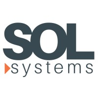
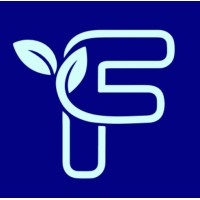

Work Experience
Software Developer (Part-time)
Koduu (Microsoft Backed startup) | Toronto, ON
January 2025 - Present
- I Refactored 500+ lines of code from JavaScript to TypeScript, enabling type safety and scalability.
- I Delivered 4+ new features and pushed them to production using JavaScript, React.js, Python, and Google Cloud Platform on projects like Voxmail, an AI Customer Service agent.
- I Developed data pipelines using Node.js, Puppeteer, Selenium, NumPy, and GCP to automate competitor tool discovery and LinkedIn profile searches, saving 150+ hours and $4500 of manual data entry.

Software Engineer Intern
Sol Systems | Oakville, ON
May 2024 - August 2024
- I led MVC web application development using ASP.NET Core, React, TypeScript, and SQL, resolving 80+ bugs and implementing 10+ features to enhance client satisfaction via RESTful APIs.
- I optimized software deployment with Docker, Postman, and Kubernetes, reducing bugs by 15% through Microservices Architecture.
- I refactored 300+ lines of legacy ASP.NET code, improving SDLC efficiency and stakeholder satisfaction.

Frontend Developer
Flourish Health | Toronto, ON
May 2024 - June 2024
- I implemented website UX using Figma design to plan for the website layout.
- I used TypeScript, React, and Bootstrap to implement a dynamic website focused on user design and quality.
- I worked seamlessly with a team of developers to integrate different plans and designs into the website to increase team efficiency and client satisfaction.